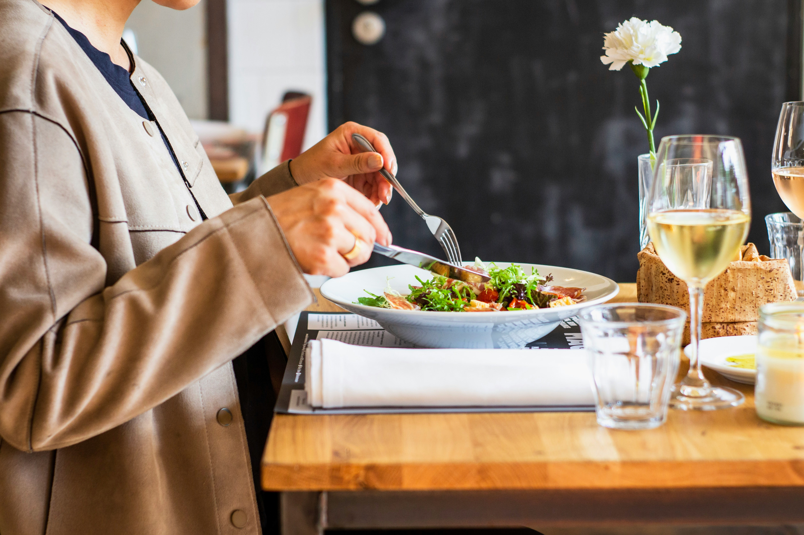

Fresh connection, one salad at a time
新鮮なつながりを、一つのサラダから
Fresh
Concept
健康と交流を促進する、サラダをテーマにした交流のかたち
「Salad Meeting」のコンセプトは健康的な食生活
を促進しながら、ビジネスや社会人交流の場を提供
することです。
サラダは、栄養価の高い食材を組み合わせた健康的
な食事であり、また、ビジネスや社会人交流の場で
の軽食としても人気があります。Salad Meetingで
は、健康的な食事を通じて、ビジネスや社会人交流
の場を提供し、参加者の健康と交流を促進します。
また、サラダの材料を組み合わせるように様々な業
種や分野の人々が交流し、新しいアイデアやビジネ
スチャンスを生み出す場でもあります。
Service

Business
サラダを提供するビジネスランチイベント
健康的な食事を提供しながら、ビ ジネスや社会人交流の場を提供するイベントです。参加 者は、自由にサラダの材料を選び、オリジナルのサラダ を作りながら、楽しく交流することができます。